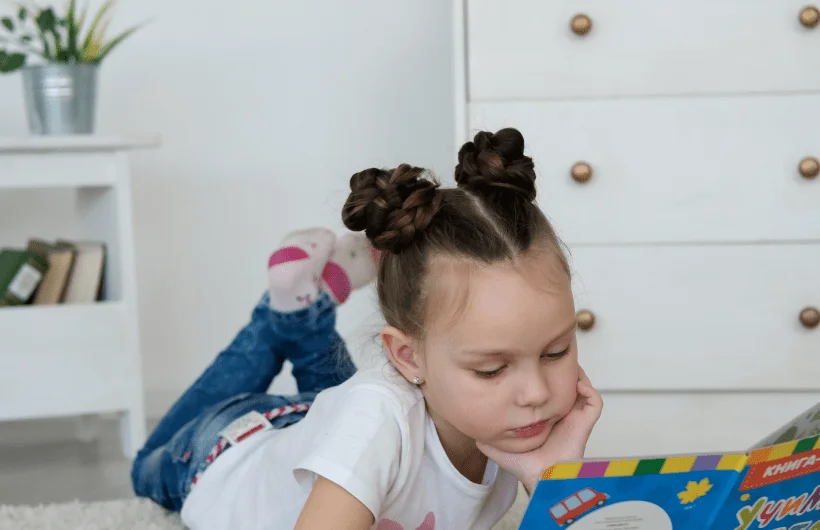

• 1 - 3,5 года – гласные и простые согласные
• 3,5 - 3 года 8 мес. – [с], [з]
• 4 - 4,5 года – [ш], [ж], [ч], [щ], [ц]
• 5 лет – [л], [л’]
• 6 лет – [р] [р’]
• К 6,5 - 7 годам ребёнок должен правильно произносить все звуки родного языка!

• Обладает запасом в 200-300 слов (в активном словаре более 50 слов).
• Повторяет слова за взрослым.
• Составляет короткие предложения (из 2-3 слов).
• Называет предметы, изображённые на картинках.
• Хорошо знает своё имя, произносит его.
• Пользуется словами "да", "нет", "ещё".
• Использует существительные в разных падежах (то есть с разными окончаниями).
• Согласует предмет и действие ("машина едет", "я хочу").
• Рассказывает детские стишки.
• Имеет словарный запас 1000-1500 слов.
• Пользуется фразой.
• Часто задает Вам вопросы.
• Пользуется двух-, трёхсловными предложениями.
• Говоря, высказывает свои впечатления, мысли.
• Договаривает звуки, слоги, слова при чтении.
• Понимает значение простых предлогов и множественного числа.
• Знает время суток.
• Называет два цвета.

• Обладает словарным запасом около 4000 слов.
• Пользуется всеми типами предложений, в том числе и сложными.
• Умеет пересказывать.
• Знает простые антонимы (большой - маленький; твёрдый - мягкий).
• Помнит и может описать прошедшие события.
• Использует абстрактные и отвлеченные понятия.
• Хорошо ориентируется в пространстве и на листке бумаги.
• Различает и дифференцирует звуки речи.